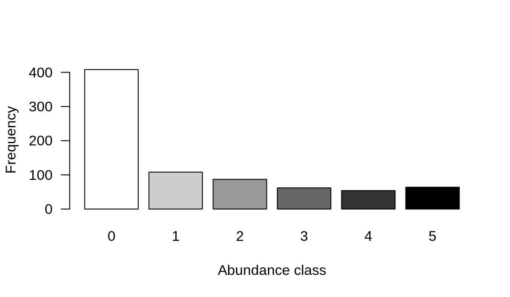
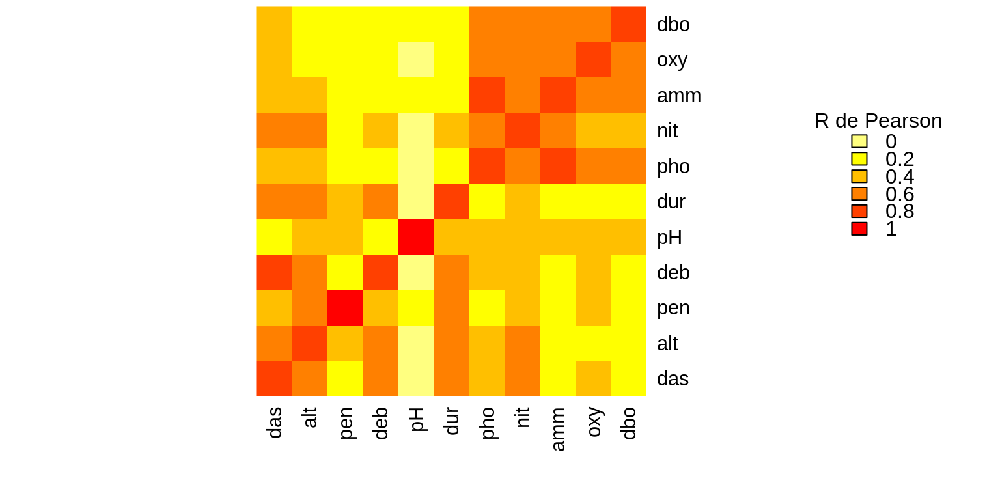

Chapitre 4 Exploration les données
Encore une fois, nous utiliserons les données de la rivière Doubs. “DoubsSpe.csv” est une matrice de données d’abondance d’espèces de communautés de poissons dans laquelle la première colonne contient les noms des sites de 1 à 30 et les colonnes subséquentes correspondent aux différentes espèces de poissons. “DoubsEnv.csv” est une matrice de données environnementales pour les mêmes sites. La première colonne contient donc les noms des sites de 1 à 30 et les colonnes suivantes les mesures de 11 variables abiotiques. Notez que les données utilisées pour les analyses d’ordination sont généralement en format long (EN).
Encore une fois, nous utiliserons les données de la rivière Doubs (Verneaux 1973) pour cet atelier.
DoubsSpe.csvest une matrice de données d’abondance d’espèces de communautés de poissons dans laquelle la première colonne contient les noms des sites de 1 à 30 et les colonnes subséquentes correspondent à 27 différentes espèces de poissons.DoubsEnv.csvst une matrice de données environnementales pour les mêmes sites. La première colonne contient donc les noms des sites de 1 à 30 et les colonnes suivantes les mesures de 11 variables abiotiques.Notez que les données utilisées pour les analyses d’ordination sont généralement en format long (EN).
# Assurez vous que les fichiers se trouvent dans votre
# répertoire de travail! Si R ne trouve pas le jeu de
# données, définissez votre répertoire de travail avec
# setwd() au dossier dans lequel vos données sont
# sauvegardées (par exemple setwd('~/Desktop/workshop10'))
spe <- read.csv("data/doubsspe.csv", row.names = 1)
spe <- spe[-8, ] # Supprimer site 8 (pas d'espèces).
# Matrice d'abondances d'espèces de poissons: “DoubsSpe.csv”
spe <- read.csv("data/doubsspe.csv", row.names = 1)
spe <- spe[-8, ] # Supprimer site 8 (pas d'espèces).
# Attention! Exécuter cette ligne une seule fois.
# Matrice de données environnementales: “DoubsEnv.csv”
env <- read.csv("data/doubsenv.csv", row.names = 1)
env <- env[-8, ] # Supprimer le site 8 puisqu'on l'a supprimé de la matrice d'abondance. # N'exécuter qu'une seule fois.4.1 Données d’abondances d’espèces
Nous pouvons utiliser les fonctions de résumé pour explorer les données “Spe” (données d’abondances de poissons) et découvrir les caractéristiques telles que les dimensions de la matrice, les noms des colonnes et les statistiques descriptives de ces colonnes. Ceci est un rappel de l’atelier 2.
Pour commencer, explorons la matrice des abondances de poissons.
## [1] "CHA" "TRU" "VAI" "LOC" "OMB" "BLA" "HOT" "TOX" "VAN" "CHE" "BAR" "SPI"
## [13] "GOU" "BRO" "PER" "BOU" "PSO" "ROT" "CAR" "TAN" "BCO" "PCH" "GRE" "GAR"
## [25] "BBO" "ABL" "ANG"## [1] 29 27Et, si on veut plus de détails sur les objets de la matrice, c’est-à-dire les espèces:
head(spe) # 5 premières lignes
str(spe) # structure d'objets de la matrice
summary(spe) # statistiques descriptives des objets (min, moyenne, max, etc.)Il est également utile de jeter un coup d’œil rapide à la structure de la communauté en représentant graphiquement la distribution de l’abondance des espèces dans la matrice de communauté.
# Compter la fréquence d'espèces dans chaque classe
# d'abondance
ab <- table(unlist(spe))
# Visualiser cette distribution
barplot(ab, las = 1, xlab = "Abundance class", ylab = "Frequency",
col = grey(5:0/5))
Vous remarquerez peut-être qu’il y a beaucoup de zéros dans les données d’abondance.
Combien y a-t-il de zéros?
## [1] 408Quelle proportion de l’ensemble des données cela représente-t-il ?
## [1] 0.5210728Plus de 50% de notre jeu de données est composé de zéros ! C’est un pourcentage élevé, mais pas inhabituel pour des données sur l’abondance des espèces. Cependant, de nombreux zéros peuvent entraîner un problème de double zéro, où des absences communes augmentent artificiellement la similarité entre les sites, en termes de composition de leur communauté. En d’autres termes, deux sites peuvent sembler plus similaires simplement parce qu’ils manquent tous les deux certaines espèces, même si les absences communes ne les rendent pas écologiquement similaires. Nous voulons plutôt que les présences communes déterminent la similarité des sites.
Pour éviter ce problème de double zéro, nous allons appliquer une transformation aux données sur les espèces. Legendre and Gallagher (2001) a proposé cinq pré-transformations des données d’espèces, dont quatre sont disponibles dans la fonction decostand() du paquet vegan.
La transformation de Hellinger exprime les abondances comme la racine carrée de leur abondance relative sur chaque site (Borcard, Gillet, and Legendre 2011), ce qui résout le problème des doubles zéros. Nous appliquerons cette transformation à l’ensemble de données sur l’abondance des poissons.
4.2 Données environnementales
Maintenant, familiarisons-nous avec les variables environnementales abiotiques mesurées sur les mêmes sites. Tout d’abord, nous pouvons explorer la matrice en utilisant les mêmes fonctions que celles utilisées ci-dessus.
## [1] "das" "alt" "pen" "deb" "pH" "dur" "pho" "nit" "amm" "oxy" "dbo"## [1] 29 11## das alt pen deb pH dur pho nit amm oxy dbo
## 1 0.3 934 48.0 0.84 7.9 45 0.01 0.20 0.00 12.2 2.7
## 2 2.2 932 3.0 1.00 8.0 40 0.02 0.20 0.10 10.3 1.9
## 3 10.2 914 3.7 1.80 8.3 52 0.05 0.22 0.05 10.5 3.5
## 4 18.5 854 3.2 2.53 8.0 72 0.10 0.21 0.00 11.0 1.3
## 5 21.5 849 2.3 2.64 8.1 84 0.38 0.52 0.20 8.0 6.2
## 6 32.4 846 3.2 2.86 7.9 60 0.20 0.15 0.00 10.2 5.3Nous pouvons alors nous attarder un peu plus sur les objets, qui sont les variables environnementales dans ce cas.
4.2.1 Colinéarité
Il est également conseillé de vérifier les corrélations entre les variables, car les méthodes d’ordination sous contrainte que nous utiliserons sont très sensibles aux colinéarités dans la matrice explicative. Cela implique qu’une variable peut sembler très importante simplement parce qu’elle a été traitée en premier dans l’analyse si elle est fortement corrélée avec une ou plusieurs autres variables qui contribuent à expliquer la variable de réponse.
# On peut également détecter (visuellement) les colinéarités entres variables:
heatmap(abs(cor(env)), # corrélation de Pearson (note: ce sont des valeurs absolues!)
col = rev(heat.colors(6)),
Colv = NA, Rowv = NA)
legend("topright",
title = "R de Pearson",
legend = round(seq(0,1, length.out = 6),1),
y.intersp = 0.7, bty = "n",
fill = rev(heat.colors(6)))
Certaines variables semblent corrélées… Par exemple, das est fortement corrélé avec alt, deb, dur, nit, entre autres!
4.2.2 Standardisation des données
Il est impossible de comparer les effets de variables qui ont des unités différentes. Par exemple, une variable mesurée en millimètres semblerait plus importante que si elle était mesurée en mètres, simplement parce que la valeur est plus grande (par exemple, 1000 millimètres contre 1 mètre). La normalisation des variables avec des unités différentes est donc cruciale.
Dans ce jeu de données, les données environnementales sont toutes exprimées dans des unités différentes et devront donc être normalisées avant d’effectuer des ordinations. Nous pouvons à nouveau utiliser la fonction decostand() pour normaliser les variables environnementales.
# standardiser les données
env.z <- decostand(env, method = "standardize")
# centrer les données (moyenne ~ 0)
round(apply(env.z, 2, mean), 1)## das alt pen deb pH dur pho nit amm oxy dbo
## 0 0 0 0 0 0 0 0 0 0 0## das alt pen deb pH dur pho nit amm oxy dbo
## 1 1 1 1 1 1 1 1 1 1 1References
Borcard, Daniel, François Gillet, and Pierre Legendre. 2011. Numerical Ecology with R. Use R! New York: Springer-Verlag. https://doi.org/10.1007/978-1-4419-7976-6.
Legendre, Pierre, and Eugene D. Gallagher. 2001. “Ecologically Meaningful Transformations for Ordination of Species Data.” Oecologia 129 (2): 271–80. https://doi.org/10.1007/s004420100716.
Verneaux, J. 1973. In, Thèse d’état:257. Essai de Biotypologie. Besançon.